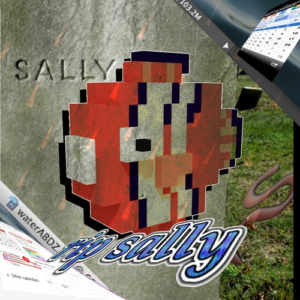
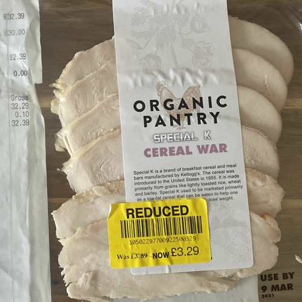
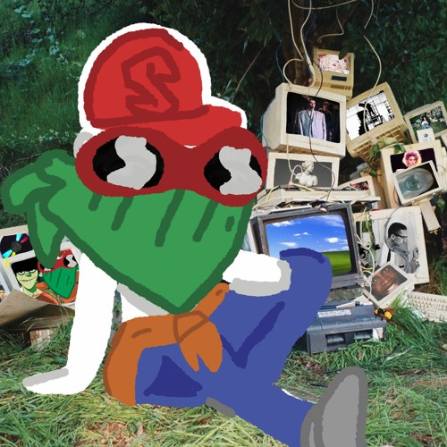

(any retraace solo work you can use with credit, please contact individual artists permission for featured works!)
who knows what could be around that corner?
enter: phase 2, special k lives once more and back with a vengence
funny, again
i had a notification pop up in my calendar for a fish that died in 2013. this is dedicated to her.
the dramatic conclusion to the SKCU Phase 1
sophomore slump, wouldnt really recommend in all honesty
my stupidest freestyles on the best plunderphonic beats i have ever heard
iconic, has so much heart to it. my most precious work // formerly carbon copy